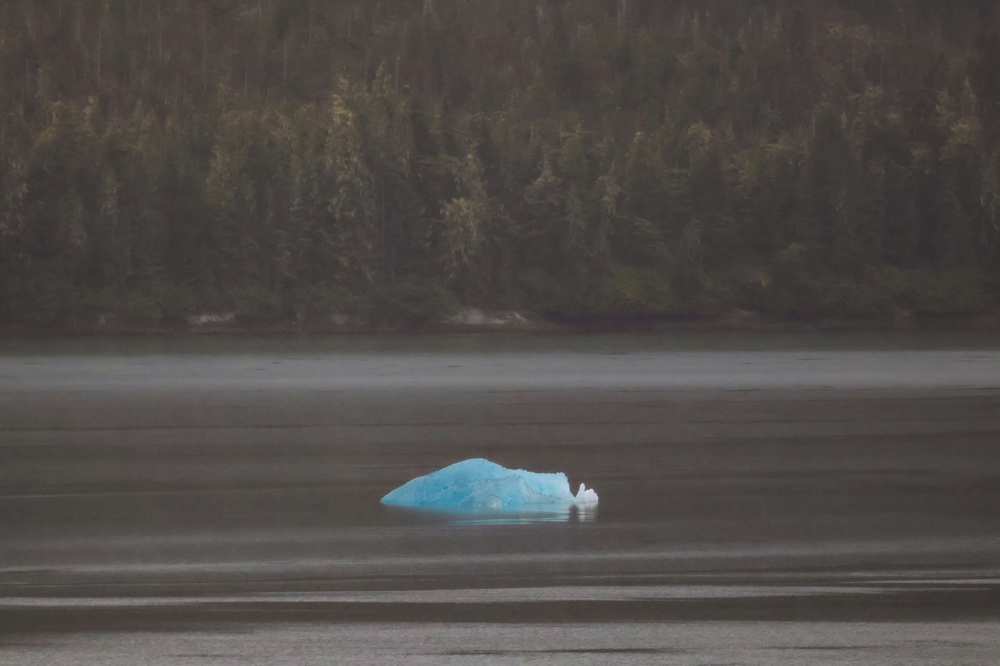

Por que reduzir o plástico?
O plástico descartável é um dos maiores poluentes do planeta, afetando animais, oceanos e até a nossa saúde.
Veja como ajudarUm passo simples para um futuro melhor
O plástico descartável é um dos maiores poluentes do planeta, afetando animais, oceanos e até a nossa saúde.
Veja como ajudar